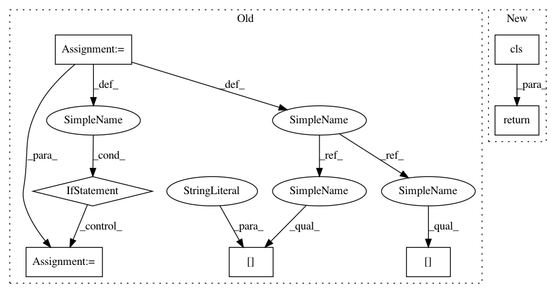

4f53f76929756eff69a3c33f1207726cfc96c128,snips_nlu/entity_parser/custom_entity_parser.py,CustomEntityParser,from_path,#Any#Any#,105
Before Change
parser_usage = CustomEntityParserUsage(model["parser_usage"])
custom_parser = CustomEntityParser(parser_usage)
custom_parser.entities = set(model["entities"])
if model["parser"] is not None:
_parser_path = Path(model["parser"])
custom_parser._parser = GazetteerEntityParser.load(_parser_path)
return custom_parser
def _stem_entity_utterances(entity_utterances, language):
After Change
@classmethod
def from_path(cls, path):
parser = GazetteerEntityParser.from_path(path)
return cls(parser)
@classmethod
def build(cls, dataset, parser_usage):
from snips_nlu.dataset import validate_and_format_dataset
In pattern: SUPERPATTERN
Frequency: 3
Non-data size: 7
Instances
Project Name: snipsco/snips-nlu
Commit Name: 4f53f76929756eff69a3c33f1207726cfc96c128
Time: 2018-10-02
Author: clement.doumouro@gmail.com
File Name: snips_nlu/entity_parser/custom_entity_parser.py
Class Name: CustomEntityParser
Method Name: from_path
Project Name: IDSIA/sacred
Commit Name: 907a87c18a59daa45b1f6383cc5d7f02ac2cbe97
Time: 2019-08-25
Author: gabrieldemarmiesse@gmail.com
File Name: sacred/observers/slack.py
Class Name: SlackObserver
Method Name: from_config
Project Name: snipsco/snips-nlu
Commit Name: 4f53f76929756eff69a3c33f1207726cfc96c128
Time: 2018-10-02
Author: clement.doumouro@gmail.com
File Name: snips_nlu/entity_parser/custom_entity_parser.py
Class Name: CustomEntityParser
Method Name: from_path
Project Name: tensorflow/datasets
Commit Name: 83218b7cb41cbcd3b4800313ecd8fe33b846205a
Time: 2020-08-07
Author: cs17btech11040@iith.ac.in
File Name: tensorflow_datasets/core/features/sequence_feature.py
Class Name: Sequence
Method Name: from_json_content